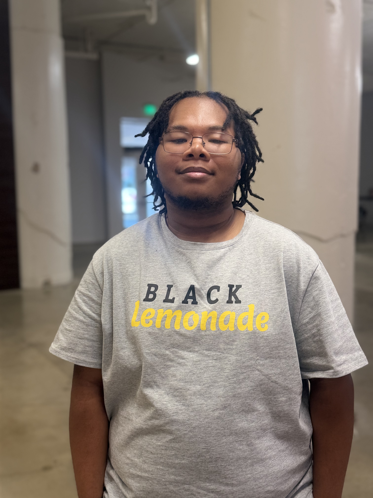
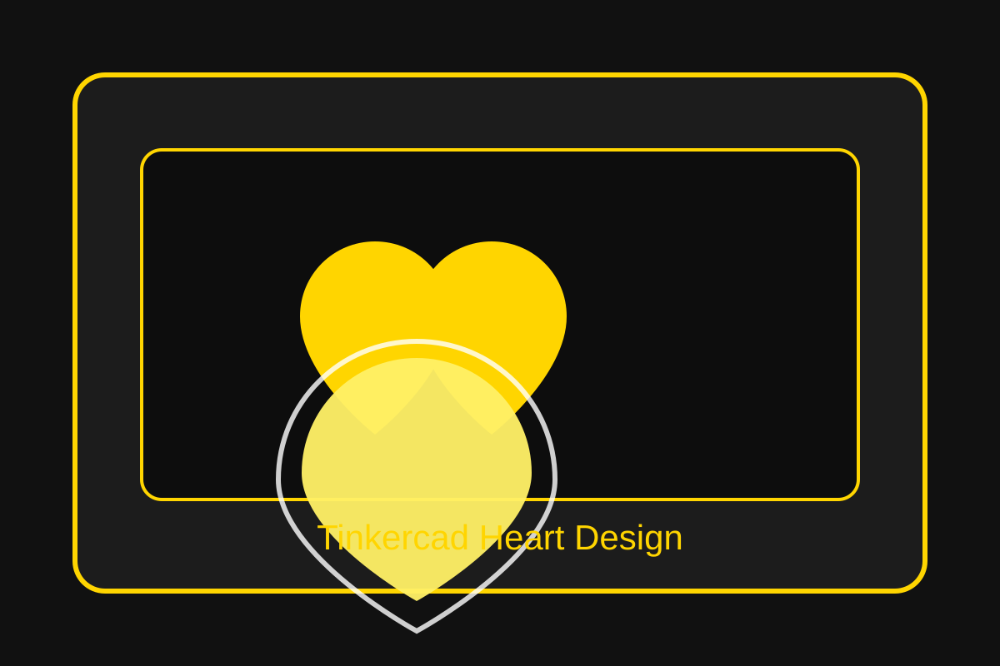

Shared the campaign mission and community goals through a polished presentation deck.
Open PDFAbout Me

Hi, my name is Tyler.
I am hardworking, creative, and adaptable. I enjoy learning new things, working with others, and building skills in both music and technology. I plan to attend Southwest to study Musical Performance and Computer Engineering.
Black Lemonade experience
I joined Black Lemonade to gain real-world experience, meet new people, improve communication skills, build confidence, and grow professionally. The experience gave me a chance to contribute to meaningful work while developing both my personal and professional strengths.
Campaign Work
Memphis Youth Mentorship Campaign
Black Lemonade supports Memphis youth through mentorship, leadership, creative media, life skills, and community impact. The campaign goals are to raise awareness for Memphis youth programs and encourage volunteers, donors, and student participation.
LemonAID Community Support
Strong communities start with supported youth.
Empower the next generation, one voice at a time. Mentorship today creates leaders tomorrow.
Projects
Featured work and initiatives
Created a campaign-focused graphic message that highlights youth support and mentorship.
Open PDFProduced an advocacy video that communicates the campaign message with impact and clarity.
Watch VideoDesigned a heart pendant/keychain concept that reflects creativity and community connection.
View DesignBuilt a modern, responsive site to present my work, experience, and campaign contributions.
Visit Site3D Visuals
3D Design Gallery

“Black Lemonade heart pendant/keychain design created in Tinkercad.”
Video